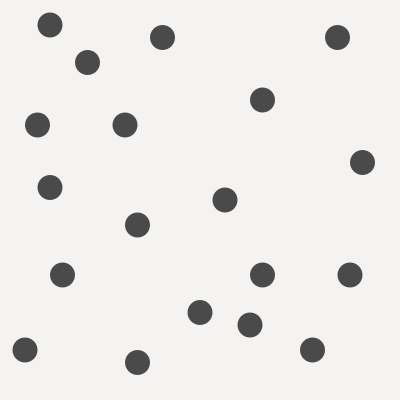
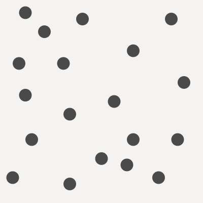
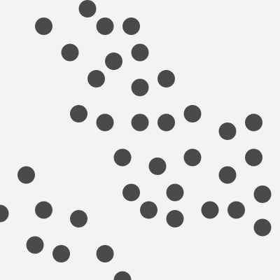
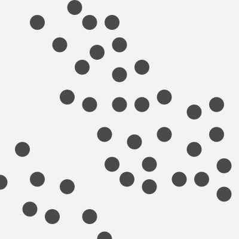

Point Placing Strategies
Overview
Building a complex procedural generation system requires analyzing your problem and creating a strategy for solving it. Explore tactics and strategies for placing points on a square.
Tools
p5.js
Computational Form Strategies
So far we’ve been looking at low-level topics like how to use random() and noise() to get specific results. As our goals grow more complex, we need to look at problems from at a much higher level. To create more complex systems you must develop a clear understanding of the result you would like to achieve, break the task down into smaller sub-tasks, and then implement the sub-tasks in code. In short you need to have a plan—a strategy—before you start coding.
Intermediate programming students often hear this advice:
Break you complex problem into smaller parts, and solve those parts.
In practice, its tricker than that. It’s hard to understand a complex problem and it’s hard to break complex problem down. With experience you will be able to tackle larger and more varied problems, but even very experienced programmers work on systems they can’t understand and break-down at first.
When the program you want to make is too complex to understand well enough to break down you still have an option for getting started: make a simpler program. For example, imagine you want to make a game like pong. You can begin to break it down into sub-tasks—keyboard controlled paddles, animated ball, scoreboards, etc—but it is hard to plan all those pieces at once. Before you start implementing each piece, you won’t know the details, and without the details its hard to make pieces that fit together. So start with a very simple program: just draw a little square—the ball—on the screen. Build and run this program to make sure it works. Then start adding on. Make the little square move to the right. Don’t worry about the paddles, or the score yet. Make the square bounce when it hits the side. Then make it move diagonally, and make sure it bounces off all the sides.
You might make make dozens incremental working programs as you get the basic ball working. As you do, you will gain a clear understanding of details you need to see how that piece will work with the others. As you start to bring in other elements—like the paddles or scoreboard—you might find out that you need to go back and change how the ball works. You can expect to run into some dead-ends and back track. This might have been avoided if you had made a complete plan in the beginning, but in the beginning, you didn’t know enough to make a complete plan. This reason this strategy works is simple: instead of trying to do something you can’t, you try to do something you can.
Building a Toolbox
Many problems can be solved using the same techniques composed in different ways. The techniques we have already discussed are building-blocks that can be used in a wide array problems. As you explore other tools and media you will see many common themes and techniques emerge.
Some of the more complex techniques have earned their own names: pseudo-random number generation, noise sampling, brownian motion, L-systems, neural nets, turtles, Markov chains, poisson-disc sampling, particle systems, fractals, meta-balls. We’ve explored some of these already and will touch on others in the course of this class, but you don’t need to know all of these techniques to build interesting things.
In this chapter we’ll be looking at how conceptually simple steps can be combined in different ways to get different effects.
Points on a Square
Consider the image below. How might you make something like this?

Where Should I Put Things?
Many procedural systems have to answer a fundamental question: Where should I put things?.
This problem area shows up all the time: putting trees on an island, putting beads of water on glass, putting scratches to a spaceship. In these situations, it is important to control the placement carefully to achieve an appropriate look. Trees tend to grow in groups and in certain areas where the conditions are right. They don’t tend to grow at high altitudes, in the water, or where there is no rain. Beads of water shouldn’t overlap because when beads of water touch the join into a bigger bead. Scratches are more likely on raised, exposed parts of the ship that might collide with debris. Each situation has different requirements, and depending on your approach, your can determine how planned, chaotic, random, natural, or mechanical the placement feels.
Most of this chapter will address this problem area by exploring a simple example: arranging points on a square.


What’s the Difference?
Analyze each of the examples below, carefully consider their similarities and differences.
- How does each example compare to the others?
- What characteristics could be used to group similar examples?
- What applications might each placement pattern have?

Placing the Points
If we want points arranged on a square, we’ve got to start by creating some points and assigning them initial positions. There are many, many ways to go about this; here are five relatively simple, but powerful, tactics. I’ve given each of these tactics a name here, but these are not widely used names.
Random Placement
Place each point at a random location on the square.
x = random() * width;
y = random() * height;
This is a quick, effective, and straight forward way to lay points down. In theory, since the placement is random, all of the points might be placed in a clump or on one half. In practice, the points are mostly evenly distributed over the plane, with some areas a little more or less dense.
Grid Placement
Place points on grid squares. One way to do this is a nested loop. This approach guarantees a perfectly even distribution.
for (row = 0; row < grid_rows; row++) {
for (col = 0; col < grid_cols; col++) {
x = (row + .5) / grid_rows * w;
y = (col + .5) / grid_cols * h;
...
}
}
Noise Placement
Place each point at a location determined by a noise lookup.
- Because noise is center biased, the results will center biased.
- Each dot will be placed near the last as the values change in the noise cloud.
- This technique allows you some control over the proximity of successive points.
// loop with _i_
x = noise(i * frequency, 0) * w;
y = noise(i * frequency, 1000) * h;
Cull Placement
Place points randomly, but reject a point if it is too close to an existing point or too far from all existing points. In the example below, three points already exist and a fourth is being considered. Three possible values are shown. One is too close and one is to far, so they are rejected. The third location is okay, and a fourth point at that location is added.


This tactic is essentially unoptimized poison-disc sampling. Poison-disc sampling is great when you need evenly distributed points without pattern artifacts.
Stamp Placement
Create pre-defined arrangements of points by hand or generatively. Copy these arrangements onto different locations.
This technique is allow mixing of hand-made and procedural design.


Moving the Points
These tactics can be used to move existing points. Many effects can be created by combining these with the placement techniques above.
Random Displacement
Given a set of points, offset the location of each point a random amount. This can be used to roughen up a rigid arrangement like grid placement produces.
x = x + random() * width;
y = y + random() * height;
Noise Displacement
Displace each point at by an amount determined by a noise lookup.
- This technique allows for nice control over the frequency of displacement.
- Can be used to create wave-like effects.
x = x + noise(i * frequency, 0) * w;
y = x + noise(i * frequency, 1000) * h;
Relaxation Displacement
Find pairs of points that are near each other. Move them towards or away from each other a small amount. This technique is often applied several times in a row with small movements. This avoids the problem of pushing a point away from one, but then into another.
- This technique can be used to push points apart to some minimum distance.
- This technique can also be used to pull points together if they are near each other.
- This technique simulates attractive or repulsive forces acting on the points and can be used to loosely simulate natural phenomenon.

 

Noise Culling
Sample noise based on the location of the point. Use the sampled value to determine if the point should be culled (discarded).

 

In the example above points are removed if the corresponding noise value is too low (dark). This results in patches or islands of dots.
Tactics Match
What tactics might have been used to get each result below?
| Place | Move |
|---|---|
| Random | Random |
| Noise | Noise |
| Grid | Relaxation |
| Cull | Noise Cull |
| Stamp |
Point Placing Demo
Properties of PCG System
When designing a procedural generation system there are several properties to consider. The following properties are borrowed from PCGBook: Chapter 1
Speed
- How fast does your program need to run?
- Is it okay if takes a very long time to complete?
- Many times a faster running program is harder to code and understand.
- A frame of VR content needs to be rendered in under 10ms, and a short pre-rendered animation may take days to render.
Reliability
- Does your program need to produce a good result every time?
- Are results shown directly to your audience, or will you have the opportunity to edit?
Controllability
- Does your program expose any user parameters?
- Do you want explore the parameter space manually?
- Do you want to have tight control over the results or should everything work automatically?
Expressivity and Diversity
- How much apparent range does your system have?
- Does everything look same-y?
- Is it okay for your output to be completely wild or does it need to satisfy some constraints?
- If you are exposing parameters, do they allow for meaningful control?
Creativity and Believability
- Do you want your results to look natural or hand-made?
- Is it okay for them to look “computer-y”?
- If your system is generating variations on something that already exists, how closely do you want to copy the original?
Repeatability
- Do you need the ability to generate the same result more than once?
Challenge + Sketch!
Base
This is the last week of the “Foundation” unit. Look back at the topics covered so far: tile systems, using random, user parameters, using noise, and now thinking strategically.
Begin by completing the challenges for this week. Completing this week’s challenges will result in two posts. This week the challenges are required.
Then keep sketching! For the remaining three posts, I encourage you to build a single, more complex sketch and post work in progress as you go.
Required Challenge 1: Dots A -> B -> X
- Analyze the challenge, clearly describe what the sketch does.
- Strategize how you would achieve the same effect.
- Study the provided starting code.
- Recreate the challenge as closely as you can. You may use the starting code, or start from scratch.
- Extend the example to create a unique sketch. Try to make something no one else will.
- Post your finished sketch.
Challenge Goal
Challenge Start Code
Required Challenge 2: Line A -> B -> X
Same as above: Analyze, Strategize, Study, Recreate, Extend, Post
Challenge Goal
Challenge Start Code
Reading + Watch + Play
Read
Procedural Content Generation in Games is a collection of research in the field of procedural game content. It covers many interesting topics including dungeon+maze generation, fractals, L-systems, generating rules/mechanics, and mixing proc-gen and human-authored content.
Watch
Game Maker’s Toolkit is a Youtube channel that features high-quality video essays on game design.
Play
If you want to play Spelunky—optional but highly recommended—original version (not the HD Remake) is free.
Reference Links
- Game Maker’s Toolkit: How (and Why) Spelunky Makes its Own Levels
- Overview of the Spelunky level generator from a technical and critical perspective.
- Darius Kazemi: Spelunky Mod
- Darius kazemi has created a mod of the original Spelunky that runs in the browser and visualizes level generation.
- bl.ocks.org: Poisson-Disc, Poisson-Disc II
- Poisson Disc description, visual explanation, and sample code by Mike Bostock.
- Devmag.org: Poisson Disk Sampling
- Longer article on implementing and applying Poisson Disk Sampling
- Random Points on a Sphere
- Nice, interactive demo of three strategies for placing points on a sphere.